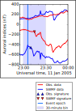
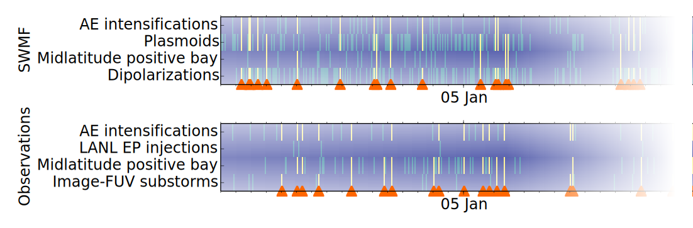

John Haiducek, Dan Welling, Natasha Ganjushkina, Steve Morley
Mar 2, 2018
Output from a magnetohydrodynamic (MHD) model
Summary
About me
Model and project overview
Substorm identification
Substorm validation results
Space to lasers and back again
FalconSat-3PBMOD (John Retterer)DPAL laser (Pitz et al., 2016)MHD modeling
Space Weather Modeling Framework
Solar wind provides energy to the magnetosphere
Walt Feimer, NASA SVS, 2010
Why study substorms with MHD?
Key source for geogmagnetically induced currents
Contribute to spacecraft charging
Substorms are near the limit of what we can model
Majority of existing MHD-substorm work is case studies
No MHD model has been validated for substorm prediction
MHD can predict substorm effects if the substorm itself is accurately represented
Substorm validation effort
Use a “vanilla” SWMF global magnetosphere set-up
Feed a month (January, 2005) of observed solar wind data into it
Look for substorms
Summary
About me
Model and project overview
Substorm identification
Substorm validation results
Plasmoids move tailward
Substorm currents affect magnetic fields

Energetic particles detected by spacecraft
Henderson, 2009
LANL SOPA instrument detects particle fluxes in geosynchronous orbit
Visually inspected particle data for dispersionless injections
Auroral brightening
Kavanagh et al., 2007
Substorm onsets observed WIC camera on the IMAGE spacecraft
Use list from Frey et al., 2004 (since updated to include 2005)
Substorm identification challenges
Substorm identification is contentious
Observational analyses of substorms use widely varying methodology
Events may be missed due to location
Other processes can sometimes be mistaken for substorms
Our approach: Identify substorms using multiple methods, and combine the results from each into a single list
Substorm identification process
Identify substorm signatures: As many different kinds as possible
Plasmoid releases (model)Satellite fields (model+obs.)Ground-based fields (model+obs.)Energetic particles (obs.)Auroral brightening (obs.)
Divide month into 30 minute time intervals
Identify intervals in which multiple signatures occurred
Combining signatures
Count number of distict signatures in each 30-minute bin
If more than n signatures is present in a bin, count it as a substorm
Use the time of the first signature as the substorm onset time

For the model n=3. For observations, n=2 (to account for data gaps in observations)